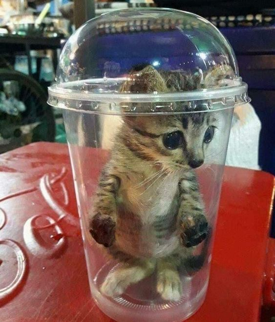
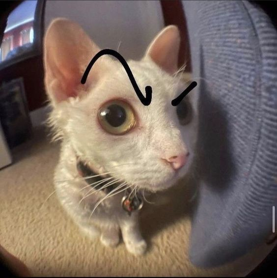

Este gato tiene una figurita de anime como polola. Se aman. Es un
gato otaku.
Este gato está super enojado porque vive en Venezuela.

Este gato cometió muchos crimenes en su pasado.
Este gato es un hada del bosque. Sueño de muchos, realidad de pocos.
Este gato cree que tiene poderes psicólogicos. Es un gato icónico.
Este gato se cree un pokémon. Lo extraño es que este pokémon es un
ratón.

Este gato te juzga al mismo tiempo que te hace una pregunta. Se dice
que se llama Karen.
A este gato le contaron que ya tiene que regresar a la escuela.
Estos gatitos fueron bendecidos con manchas de corazón. Se dice que
son unos románticos.